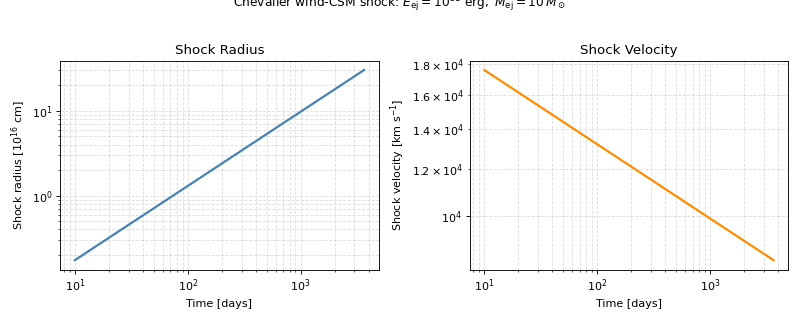

Shock Engines#
The evolution of an astrophysical shock is the central dynamical ingredient in modeling radio and X-ray transients. Whether one is describing the ejecta–CSM interaction of a supernova[1], the deceleration of a gamma-ray burst afterglow, or the late-time blast wave of a tidal disruption event, the shock radius \(R(t)\) and velocity \(v(t)\) set the stage for everything that follows: they determine the post-shock conditions that feed into the synchrotron and thermal emission models, and ultimately shape the light curves and SEDs that observers measure.
Trilobite provides a unified shock engine interface that wraps the physics of shock evolution and returns time-varying shock properties in a consistent format, regardless of whether the underlying model is a closed-form self-similar solution, a numerical ODE integrator, or a bespoke prescription. The engines are intentionally stateless, physical parameters are passed at call time rather than stored on the object, so that they can be freely used in parameter sweeps and Bayesian inference pipelines without hidden state or unexpected side effects.
These configurations can also be used to train neural surrogates of shock dynamics, which are orders of magnitude faster to evaluate than numerical engines and can be used in inference workflows that would otherwise be prohibitively expensive.
Hint
For users unfamiliar with the underlying shock physics, the theory guides provide self-contained derivations of each solution:
Theory: The Chevalier Self-Similar Solution — the Chevalier self-similar ejecta–CSM interaction
Theory: Sedov-Taylor Self-Similar Solution — the Sedov–Taylor point-explosion blast wave
Theory: The Blandford–McKee Solution — the Blandford–McKee ultra-relativistic blast wave
Theory: Numerical Shock Engines — the thin-shell ODE formulations, including the pressure-driven and mechanical internal-energy models
Chevalier and Fransson[2] is an excellent review of supernovae in circumstellar media; Chevalier[1] is the primary reference for the Chevalier self-similar solutions. The Blandford–McKee solution is derived in Blandford and McKee[3]. The mechanical shock engine follows Beloborodov and Uhm[4].
Module Overview#
In a typical shock dynamics problem, the user has a physical scenario, for example, a supernova explosion into a stellar wind, and wants to predict how the shock evolves with time. The workflow generally proceeds in two steps:
Build Initial Conditions: For numerical solvers, use the factory functions in
utilsto construct callable density and velocity profiles for the ejecta and circumstellar medium. For self-similar models,utilsprovides various helpers to convert physical parameters like explosion energy and mass-loss rate into the normalization constants that the self-similar solutions require. See Profiles and Model Setup below for a full reference table.
Evolve the shock: Call the engine’s
compute_shock_properties()method, or simply call the engine as a function, since all engines are callable, with a time array to obtain the shock radius, velocity, and any additional post-shock thermodynamic quantities supported by that particular engine.
Each engine class returns a specific set of shock properties in a custom state class (a named tuple).
Module Structure#
The shock engine infrastructure spans various layers of the larger shocks subpackage.
The tables below summarize the key classes and functions in each layer, along with their responsibilities.
For detailed API references and worked examples, see the linked sections.
Infrastructure
At the core of the shock-engine architecture is the abstract base class, contained in
the shock_engine module, which defines the two-method
contract that all engines must satisfy.
Class |
Responsibility |
|---|---|
Abstract base class defining the two-method contract that all engines must satisfy. Users encounter this class only when building custom engines; see Building a Custom Shock Engine below. |
Self-Similar Engines
The simplest (and most commonly used) set of shock engines are those corresponding to so-called self-similar solutions, which are computationally cheap analytic prescriptions valid when density profiles take special forms.
Class |
Responsibility |
|---|---|
Self-similar ejecta–CSM interaction for arbitrary power-law density profiles [1]. Single-surface (contact discontinuity only) with analytic thin-shell normalization. See Theory: The Chevalier Self-Similar Solution. |
|
Specialization of the single-surface Chevalier engine for a steady stellar wind CSM (\(s = 2\)). Accepts the mass-loss rate \(\dot{M}\) and wind velocity \(v_w\) directly, rather than a pre-computed normalization constant. |
|
Two-surface Chevalier engine that resolves the forward and reverse shocks separately using a pre-tabulated \((n,s)\) grid of self-similar constants (\(A\), \(R_{\rm fs}/R_c\), \(R_{\rm rs}/R_c\)). More accurate post-shock thermodynamics than the single-surface engine. See Chevalier Two-Shock Engines. |
|
Steady-wind (\(s = 2\)) specialization of
|
|
Point-explosion blast wave in a uniform ambient medium [5] [6]. Returns post-shock density, pressure, and temperature in addition to kinematics. See Theory: Sedov-Taylor Self-Similar Solution. |
|
Ultra-relativistic blast wave in a power-law external medium [3]. Fully analytic normalization \(C_E(k) = 8\pi/(17-4k)\) for arbitrary \(k < 3\). Returns both proper (comoving) and lab-frame post-shock quantities. See Blandford–McKee Shock Engine. |
|
Stellar-wind (\(k=2\)) specialization of
|
Numerical Engines
In cases when self-similar solvers are insufficient, one must turn to more complex engines which rely on numerical methods. These engines integrate ODEs and can handle arbitrary ejecta and CSM density profiles, but are more computationally expensive than their self-similar counterparts. Trilobite currently provides two fully implemented ODE-based engines, with four relativistic and momentum-conserving extensions reserved as planned engines for future releases.
Class |
Responsibility |
|---|---|
ODE-based thin-shell engine driven by the instantaneous Rankine–Hugoniot pressure difference across the interaction region. Supports arbitrary ejecta and CSM callables. See Pressure-Driven Thin-Shell Model. |
|
Non-relativistic mechanical engine that self-consistently evolves separate internal energies for the shocked ejecta and CSM layers, following Beloborodov and Uhm[4]. See Mechanical Internal-Energy Model. |
Utilities
To help users with setting up various density and velocity profiles for the ejecta and CSM, the
utils module provides factory functions that return unit-free
CGS callables for efficient evaluation inside ODE right-hand sides. These utilities are essential
for preparing the initial conditions for numerical shock engines,
and they also include normalization helpers for self-similar solutions.
Module |
Responsibility |
|---|---|
Factory functions for velocity profiles, ejecta kernels, ejecta density profiles, and CSM density profiles. All returned callables are unit-free CGS for efficient evaluation inside ODE right-hand sides. See Profiles and Model Setup below. |
Quickstart#
The example below demonstrates the most common use case: evolving a Chevalier wind-CSM
shock and plotting the resulting radius and velocity. The
ChevalierSelfSimilarWindShockEngine is the
simplest entry point — it requires only four physical quantities (explosion energy, ejecta
mass, wind mass-loss rate, and wind velocity) and handles all normalization internally.
import numpy as np
import matplotlib.pyplot as plt
from astropy import units as u
from trilobite.dynamics.shocks import ChevalierSelfSimilarWindShockEngine
# Instantiate the engine. No physical parameters are stored at construction time.
engine = ChevalierSelfSimilarWindShockEngine()
# ── Physical parameters ────────────────────────────────────────────────────
E_ej = 1e51 * u.erg # typical core-collapse SN explosion energy
M_ej = 10.0 * u.Msun # ejecta mass
M_dot = 1e-5 * u.Msun / u.yr # progenitor wind mass-loss rate
v_wind = 1000.0 * u.km / u.s # progenitor wind velocity
n = 10.0 # outer ejecta density power-law index
# ── Time grid: 10 days to ~10 years ───────────────────────────────────────
t = np.logspace(1, np.log10(3650), 300) * u.day
# ── Evaluate the shock engine ──────────────────────────────────────────────
# The engine is callable; engine(t, ...) is equivalent to
# engine.compute_shock_properties(t, ...).
props = engine(t, E_ej=E_ej, M_ej=M_ej, M_dot=M_dot, v_wind=v_wind, n=n)
# ── Plot radius and velocity ───────────────────────────────────────────────
fig, axes = plt.subplots(1, 2, figsize=(10, 4))
axes[0].loglog(
t.to(u.day).value,
props.radius.to(u.cm).value / 1e16,
color='steelblue', lw=2,
)
axes[0].set_xlabel('Time [days]')
axes[0].set_ylabel(r'Shock radius [$10^{16}$ cm]')
axes[0].set_title('Shock Radius')
axes[0].grid(True, which='both', ls='--', alpha=0.4)
axes[1].loglog(
t.to(u.day).value,
props.velocity.to(u.km / u.s).value,
color='darkorange', lw=2,
)
axes[1].set_xlabel('Time [days]')
axes[1].set_ylabel(r'Shock velocity [km s$^{-1}$]')
axes[1].set_title('Shock Velocity')
axes[1].grid(True, which='both', ls='--', alpha=0.4)
plt.suptitle(
r'Chevalier wind-CSM shock: '
r'$E_{\rm ej} = 10^{51}\ {\rm erg},\; M_{\rm ej} = 10\,M_\odot$',
fontsize=11, y=1.02,
)
plt.tight_layout()
(Source code, png, hires.png, pdf)
{kind=link}
{kind=link}

Types of Shock Engines#
Trilobite provides two broad categories of shock engine: self-similar solutions, which are computationally cheap analytic prescriptions valid when density profiles take simple power-law form, and numerical engines, which integrate ODEs and can handle arbitrary ejecta and CSM density profiles.
Self-Similar Shock Engines#
See also
Self-Similar Shock Engines — detailed API reference and worked examples.
Theory: The Chevalier Self-Similar Solution and Theory: Sedov-Taylor Self-Similar Solution — theoretical derivations.
Self-similar shock solutions arise when the governing equations admit a scale-free form. The shock then evolves such that a single power law in time describes both the radius and velocity, converting what is nominally a partial differential equation into an ordinary one and, in the most favorable cases, yielding a fully analytic result. These solutions are computationally cheap and carry intuitive physical scaling relations, making them the preferred first choice for parameter inference.
Five self-similar engines are currently implemented:
Class |
Geometry |
Medium |
Use when… |
|---|---|---|---|
Spherical |
Power-law (\(\rho \propto r^{-s}\)) |
Fast single-surface estimate; inference pipelines where speed matters most |
|
Spherical |
Stellar wind (\(s = 2\)) |
Same as above; \(\dot{M}\) and \(v_w\) as direct inputs |
|
Spherical |
Power-law (\(\rho \propto r^{-s}\)) |
Separate forward/reverse shock thermodynamics; accurate normalization from ODE table |
|
Spherical |
Stellar wind (\(s = 2\)) |
Same as above; \(\dot{M}\) and \(v_w\) as direct inputs |
|
Spherical |
Uniform (\(\rho = \rho_0\)) |
Point explosion in a uniform medium; full post-shock thermodynamics returned |
|
Spherical |
Power-law (\(\rho \propto r^{-k},\; k < 3\)) |
Ultra-relativistic (\(\Gamma \gg 1\)) blast wave; both proper and lab-frame post-shock quantities; returns \(\Gamma\), \(\beta\), and \(\gamma_{2,\mathrm{lab}}\) |
|
Spherical |
Stellar wind (\(k = 2\)) |
Same as above; \(\dot{M}\) and \(v_w\) as direct inputs |
Numerical Shock Engines#
See also
Numerical Shock Engines — detailed API reference and worked examples.
Theory: Numerical Shock Engines — derivation of the thin-shell equations of motion.
When the self-similar approximation fails — for instance when density profiles cannot be
described by simple power laws, or when the shock transitions between dynamical regimes
during its evolution — a numerical shock engine is necessary. Trilobite provides two
fully implemented ODE-based engines. Both share the same callable interface and accept
upstream density and velocity profiles built with the factory functions in
utils (see Profiles and Model Setup below).
Four relativistic and momentum-conserving extensions are reserved as planned engines
and will be added in future releases.
Class |
Status |
Description |
|---|---|---|
Available |
Collapses the shocked interaction region to a single thin shell driven by the net Rankine–Hugoniot pressure difference. The simplest numerical engine; suitable when a full thermal energy budget is not required. |
|
Available |
Self-consistently evolves separate internal energies for the shocked ejecta and CSM layers [4]. Retains the minimal two-shock structure while remaining inexpensive enough for parameter studies and inference workflows. |
|
[planned] |
Relativistic extension of the pressure-driven thin-shell engine. Not yet implemented — planned for a future release. |
|
[planned] |
Relativistic extension of the mechanical engine following Beloborodov and Uhm[4]. Not yet implemented — planned for a future release. |
|
[planned] |
Non-relativistic momentum-conserving shock engine. Not yet implemented — planned for a future release. |
|
[planned] |
Relativistic momentum-conserving shock engine. Not yet implemented — planned for a future release. |
Profiles and Model Setup#
The utils module provides factory functions for the
upstream density and velocity profiles that numerical shock engines require as boundary
conditions. All returned callables are unit-free CGS so they can be evaluated efficiently
inside ODE right-hand sides without unit-conversion overhead. Unit handling is performed
once at factory-call time.
The module is organized into three groups: velocity profiles for the bulk upstream flow, ejecta profiles for freely expanding supernova ejecta, and CSM profiles for the ambient circumstellar medium. A fourth helper assembles these into the four-callable tuple expected by numerical shock engines.
Velocity Profiles#
Simple two-argument callables u(r, t) representing the bulk velocity field of the
upstream gas. All three are accepted wherever a velocity-profile callable is expected.
Function |
Description |
|---|---|
Returns zero velocity for all inputs. Suitable for a stationary CSM. |
|
Returns \(u(r,t) = r/t\). Standard model for freely expanding ejecta. |
|
Factory returning \(u(r,t) = u_0\) for a fixed bulk-flow speed. |
Ejecta Profiles#
The ejecta density is modeled under the homologous approximation
where \(G(v)\) is a time-independent velocity-space kernel. Two profile families are supported: broken power-law (BPL, after Chevalier[1]) and exponential, each available with or without an outer velocity truncation. Each family is exposed at three levels of abstraction:
Normalization helpers — compute the scale parameters (\(v_t, K\) or \(v_e, K\)) from \(E_{\rm ej}\) and \(M_{\rm ej}\) and return
Quantityscalars.Kernel factories — return a CGS callable \(G(v)\) for use in
make_homologous_stationary_sources()or a custom ODE right-hand side.Profile factories — return a CGS callable \(\rho_{\rm ej}(r,t)\) that wraps the kernel with the \(t^{-3}\) prefactor.
Function |
Family |
Output |
|---|---|---|
BPL |
\(v_t\),\(K\) ( |
|
BPL, \(v_{\max}\) truncated |
\(v_t\),\(K\) ( |
|
Exponential |
\(v_e\),\(K\) ( |
|
Exponential, truncated |
\(v_e\),\(K\) ( |
|
BPL |
\(G(v)\) callable (CGS) |
|
BPL, \(v_{\max}\) truncated |
\(G(v)\) callable (CGS) |
|
Exponential |
\(G(v)\) callable (CGS) |
|
Exponential, truncated |
\(G(v)\) callable (CGS) |
|
BPL |
\(\rho_{\rm ej}(r,t)\) callable (CGS) |
|
BPL, \(v_{\max}\) truncated |
\(\rho_{\rm ej}(r,t)\) callable (CGS) |
|
Exponential |
\(\rho_{\rm ej}(r,t)\) callable (CGS) |
|
Exponential, truncated |
\(\rho_{\rm ej}(r,t)\) callable (CGS) |
CSM Profiles#
Factory functions for the circumstellar medium geometries most commonly encountered in
transient modeling. Each factory accepts physical parameters as
Quantity objects, converts units once at call time, and returns a
unit-free CGS callable rho_csm(r, t=None). The optional t argument is accepted
for API compatibility with shock-engine source functions and is ignored for stationary
profiles.
Function |
Profile |
|---|---|
Computes the wind normalization
\(A = \dot{M}/(4\pi v_w)\) in \(\mathrm{g\,cm^{-1}}\).
Returns a |
|
\(\rho(r) = \rho_0\) — uniform medium. |
|
\(\rho(r) = A r^{-2}\) — steady spherical wind. |
|
Wind profile that transitions sharply to a constant density floor outside \(r_{\max}\). |
|
Wind profile with a smooth \(\tanh\) cutoff near \(r_{\max}\). |
|
\(\rho(r) = A r^{-2} + \rho_{\rm floor}\) — wind plus a constant ambient density. |
|
\(\rho(r) = \rho_{\rm ref}(r/r_{\rm ref})^{-s}\) — general power law. |
|
Continuous broken power law with independently specified inner and outer slopes. |
|
Top-hat shell: constant density inside \([r_{\rm in},r_{\rm out}]\), floor density outside. |
|
Gaussian-shell overdensity on a background: \(\rho(r) = \rho_{\rm bg} + \rho_{\rm shell} \exp\!\left[-\tfrac{1}{2}\left((r-R_s)/\sigma\right)^2\right]\). |
Source Assembly#
Once ejecta and CSM profile callables are in hand, the convenience factory
make_homologous_stationary_sources() assembles
the four two-argument source callables (rho_1, u_1, rho_4, u_4) expected by the
numerical shock engines for the standard scenario of homologous ejecta running into a
stationary CSM:
The factory accepts a kernel callable \(G_{\rm ej}(v)\) — such as one returned by
get_bpl_ejecta_kernel() — and a CSM density
callable \(\rho_{\rm CSM}(r)\) — such as one returned by
get_wind_csm_density_func() — and returns the
four-callable tuple ready to pass to
compute_shock_properties()
or
compute_shock_properties().
For worked examples see Numerical Shock Engines.
Building a Custom Shock Engine#
Every shock engine in Trilobite inherits from the
ShockEngine abstract base class.
The contract is intentionally minimal — two methods — and is designed so that a custom
engine can be dropped into any model or inference pipeline that expects a
ShockEngine, without requiring
any changes to the surrounding infrastructure.
The ShockEngine Class#
The abstract base class defines a two-method contract:
Method |
Role |
|---|---|
High-level, unit-aware entry point. Accepts |
|
|
Low-level, pure-CGS computation. Accepts and returns bare floats or arrays with no
unit overhead. Called internally by |
All engines are also directly callable: engine(time, **parameters) is an alias for
engine.compute_shock_properties(time, **parameters).
Important
Physical model parameters must never be stored at construction time; all must be
passed as arguments to compute_shock_properties at call time. The __init__
method may set up instance-level configuration that does not depend on physical
parameters — for example, numerical tolerances, pre-cached algorithmic coefficients,
or lookup tables derived from solver settings (such as the \((n,s)\) grid used by
ChevalierTwoShockSelfSimilarEngine).
This design ensures that a single engine instance can be reused across many sets of parameters in a sweep or MCMC chain without unintended cross-contamination between evaluations.
The example below shows the minimum viable implementation of a custom shock engine: a simple free-expansion model in which the shock radius grows as \(R(t) = v_0 t\).
Example: Minimal Custom Shock Engine
import numpy as np
from astropy import units as u
from trilobite.dynamics.shocks.core.shock_engine import ShockEngine
from trilobite.utils.misc_utils import ensure_in_units
class FreeExpansionShockEngine(ShockEngine):
"""Shock engine for constant-velocity free expansion: R(t) = v0 * t."""
def __init__(self, **kwargs):
super().__init__(**kwargs)
def compute_shock_properties(self, time, v0=1e9 * u.cm / u.s, **kwargs):
t_s = ensure_in_units(time, u.s)
v0_cs = ensure_in_units(v0, u.cm / u.s)
props = self._compute_shock_properties_cgs(t_s, v0=v0_cs)
return {
'radius': props['radius'] * u.cm,
'velocity': props['velocity'] * (u.cm / u.s),
}
def _compute_shock_properties_cgs(self, time, v0=1e9, **kwargs):
time = np.asarray(time, dtype=float)
return {
'radius': v0 * time,
'velocity': np.full_like(time, v0),
}
engine = FreeExpansionShockEngine()
t = np.logspace(6, 8, 5) * u.s
props = engine(t, v0=3e9 * u.cm / u.s)
print(props['radius'].to(u.AU))
Further Reading#
The table below maps common modeling tasks to the relevant documentation:
If you want to… |
See… |
|---|---|
Understand the Chevalier self-similar solution |
|
Understand the Sedov–Taylor blast wave |
|
Understand the Blandford–McKee ultra-relativistic blast wave |
|
Use the self-similar engines (API and examples) |
|
Understand the thin-shell ODE formulations |
|
Use the numerical engines with custom density profiles |
|
Build ejecta or CSM profile callables |
Profiles and Model Setup (this page) |
Compute Rankine–Hugoniot jump conditions directly |
|
Model synchrotron emission driven by a shock |
|
Get a broad introduction to shock physics in Trilobite |